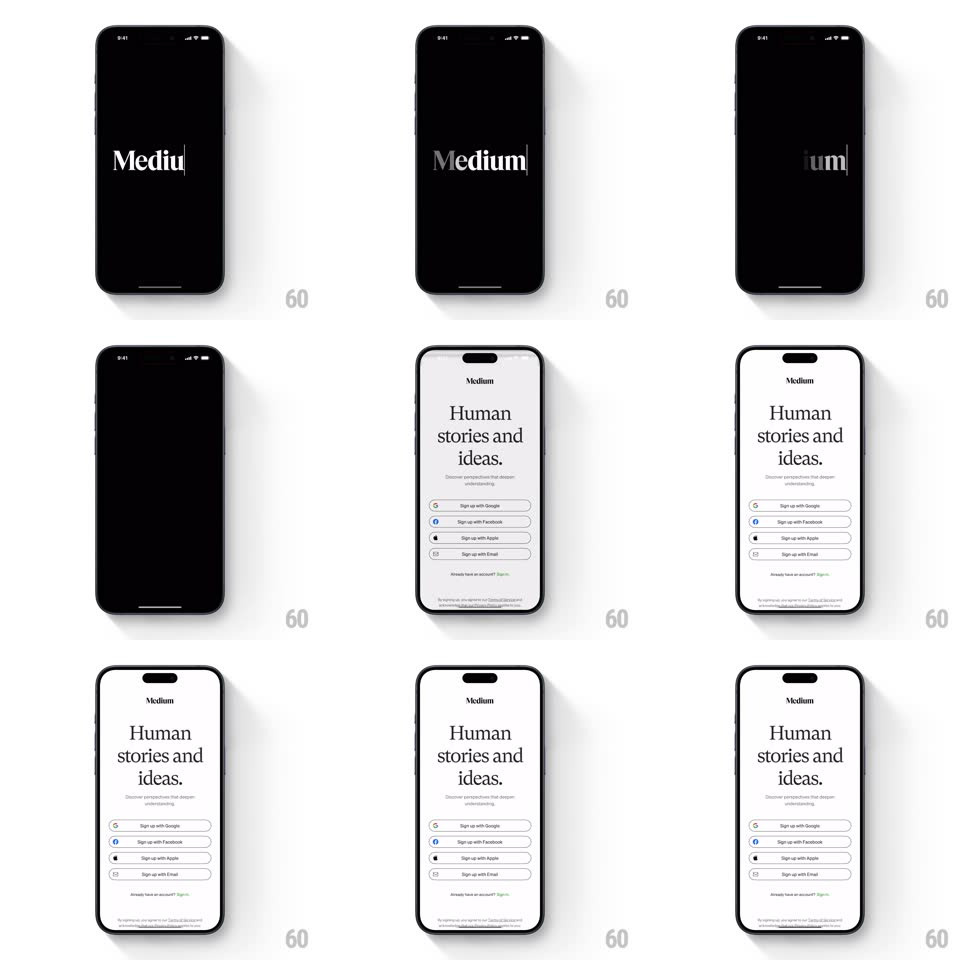

Media
Frame-by-frame

Rebuild this animation 1:1: Medium's splash-to-onboarding - the serif "Medium" wordmark appears letter by letter on black, holds, then crossfades to the light "Human stories and ideas." screen whose sign-up buttons slide up in a stagger.

Rebuild this animation 1:1: Medium's splash-to-onboarding - the serif "Medium" wordmark appears letter by letter on black, holds, then crossfades to the light "Human stories and ideas." screen whose sign-up buttons slide up in a stagger. ## Integration Integration: stack-agnostic spec - springs given as stiffness/damping, timed motions as duration + curve; map every value to your framework and animation library of choice. ## Scene Black splash with the white serif wordmark. Onboarding: white screen, small centered Medium logo, big serif headline "Human stories and ideas.", a one-line explainer, four outlined sign-up buttons (Google, Facebook, Apple, Email), "Already have an account? Sign in", terms footnote. ## Motion spec Pattern: branded hold + staggered light reveal. - Splash: the wordmark reveals left-to-right (letters fade in with a 60ms stagger, a caret-like vertical bar trailing the last letter), holds ~1.2s. - Transition: the black screen crossfades to white (400ms); the wordmark shrinks + travels to the top-center logo position (shared-element, 350ms). - The headline fades up first (rise 16px, 300ms), explainer 120ms later, then the four buttons stagger up (rise 20px + fade, 90ms apart, ease-out). - "Already have an account? Sign in" and the footnote fade in last (200ms after the final button). - After settling, nothing loops - the screen is static. ## Calibration - Serif type is the brand voice - do not substitute a sans for headline or wordmark. - Buttons are outlined pills with provider glyphs left-aligned inside. ## Reduced motion Splash crossfades directly to the fully-built onboarding screen. ## Don't miss - The caret trailing the wordmark reveal - it sells the "writing" metaphor. - The transition is a true crossfade of background color, black to white, not a slide.